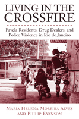

<body bgcolor="#FFFFFF" text="#000000" link="#0000FF" vlink="#CC0000" alink="#CC0000"><center><hr width="350" size="1" align="center" noshade>Communities organizing to end Brazil's urban war on drugs<hr width="350" size="1" align="center" noshade><p><a href="https://cdcshoppingcart.uchicago.edu/Cart/ChicagoBook.aspx?ISBN=9781439900031&&PRESS=temple" target="_top">Buy this book!</a> | <a href="https://cdcshoppingcart.uchicago.edu/Cart/Cart.aspx?PRESS=temple" target="_top">View Cart</a> | <a href="https://cdcshoppingcart.uchicago.edu/Cart/Cart.aspx?PRESS=temple" target="_top">Check Out</a></p><p></p></center><!--none//--><h1>Living in the Crossfire</h1>
<H2>Favela Residents, Drug Dealers, and Police Violence in Rio de Janeiro</H2>
<h3>Maria Helena Moreira Alves and Philip Evanson</h3>
<P>cloth 1-4399-0003-5 $80.50, Mar 11, <FONT COLOR=#990033>Available</FONT>
<br>paper 1-4399-0004-3 $35.95, Mar 11, <FONT COLOR=#990033>Available</FONT>
<br>Electronic Book 1-4399-0005-1 $35.95 <FONT COLOR=#990033>Available</FONT>
<BR> 254 pp
6x9
3&nbsp;figures 7&nbsp;halftones
</P><BLOCKQUOTE><I>"</i>Living in the Crossfire<i> is a comprehensive study of the violence that has become a daily fact of life for residents of the slums of Rio de Janeiro. Relying on an extensive set of oral and personal histories, this exciting book offers recommendations for containing excessive violence generated by the state and points to the underlying social and economic problems of the inhabitants of the city's slums. This insightful case study provides not only an in-depth analysis of the history of public security and human rights in Brazil during the past twenty years but also a behind-the-scenes understanding of the complex and sometimes contradictory reasoning of a broad array of policy makers struggling in very different ways to address these problems."</i> <br>&#151;<b>James N. Green</b>, Professor of History and Brazilian Studies, Brown University<i></I></BLOCKQUOTE>
<p>For all of Brazil's efforts to reduce poverty-and its progress-the favelas in Rio de Janeiro still house one-third of the city's poor, and violence permeates every aspect of the city. As urban drug gangs and police wage war in the streets, favela residents who are especially vulnerable live in fear of being caught in the crossfire. Politicians, human rights activists, and security authorities have been working to minimize the social and economic problems at the root of this &quot;war.&quot;</p>
<p><em>Living in the Crossfire</em> presents impassioned testimony from officials, residents, and others in response to the ongoing crisis. Maria Helena Moreira Alves and Philip Evanson provide vivid accounts from grieving mothers and members of the police working to stop the war and, among officials, from Brazil's President Luis In&aacute;cio Lula da Silva, who discusses his efforts to improve public security. </p>
<BR>&nbsp;<h2>Excerpt</h2><P>Excerpt available at <a href="http://www.temple.edu/tempress">www.temple.edu/tempress</a></p>
<BR>&nbsp;<h2>Reviews</h2>
<p><i>"After years of waging war on the population of the favelas, the authorities in Rio de Janeiro are in the process of adopting a different model of engagement based on community policing. Through interviews with community leaders and public security officials, the authors explore the extent to which such a transformation is possible. </i>Living in the Crossfire<i> is a must read for anyone interested in the issue of violence in Rio de Janeiro and beyond."</i> <br>&#151<b>Robert Gay</b>, Professor of Sociology, Connecticut College
<p><i>"[A] timely look at Rio de Janeiro's favelas.... Most of the book consists of interviews with favela residents, police and government officials. The community members' interviews are most compelling as they detail not only the violence and threat of violence they live with daily but also the strong sense of community and hope for better days.... Verdict: An important book for sociology and human rights collections that will also appeal to readers interested in crime and politics." </i>
<br>&#151<b><i>Library Journal</i></b>
<p><i>"As Alves and Evanson make clear midway through this excellent and informative book, Brazil�s human rights record has not improved since 1985, when the country moved from a military dictatorship to a constitutional democracy. Quite the reverse, on the base of sheer numbers things have become worse.... The calling to attention to this situation and the examination of it in all its multifaceted complexity are two of the many merits of </i>Living in the Crossfire<i>, a comprehensive, informative and at times harrowing study of institutional, political and human costs of uncontrolled state violence in territories of poverty.... Through careful and detailed research and scholarship, this book makes a strong contribution to readdressing inequality in Rio and adds to the chorus of voices calling for a complete restructuring of the police apparatus in the city." </i>
<br>&#151<b><i>Journal of Latin American Studies </i></b>
<p><i>"[A]fter reading </i>Living in the Crossfire<i>, one could only bolster the authors' opinion that security reform cannot be expected to emerge alone out of the politics of Rio de Janeiro.... This book sparks that valuable debate on human rights and public security, and enriches the core idea that there cannot be one without the other." </i> <br>&#151<b><i>Bulletin of Latin American Research</i></b>
<p><i>"These detailed ethnographies closely examine three communities caught up in this undertow.... The books chronicle how these communities, home to many of the developing world�s millions of hard-working but chronically poor workers...struggle for economic footing amid the tumult of neoliberalism.... </i>Living in the Crossfire�s<i> description of Rio�s Rocinha shows the rich historical and cultural foundations that can be revived and marshaled on behalf of local security efforts, as well as for political action."</i> <br>&#151<b><i>Perspectives on Politics</i></b>
<p><i> "The interviews conducted by the authors and their research team are what give this work strength, and the book shines as Alves and Evanson let the testimonies of their respondents stand on their own.... The stories, revelations, challenges, contradictions, anecdotes and so on these transcripts reveal are truly fascinating.... Alves and Evanson present a dynamic view of Brazil's most recognizable city and, ultimately, are successful in showing the complexities of living in a Rio favela."</i> <br>&#151<b><i>Social Forces</i></b>
<BR>&nbsp;<h2>Contents</h2><P>
<p>Acknowledgments
<br>Introduction
<p><b>Part I. Rio de Janeiro: The Marvelous City and Its Communities</b>
<br>1. The Decline of Poverty and the Rise of Violence
<br>2. Living in the Favelas in the Twenty-first Century
<br>3. Communities under Fire
<br>4. Voices of Hope and Renewal
<br>5. Voices of Community Leaders
<p><b>Part II. Voices of Public Security Officials</b>
<br>6. Security for Whom?
<br>7. Voices of Police Officers
<br>8. Voices of Government Officials
<p>Conclusion
<br>Notes
<br>Glossary
<br>References
<br>Index
</P><BR>&nbsp;<H2>About the Author(s)</H2>
<P><b>Maria Helena Moreira Alves</b> is retired from the University of the State of Rio de Janeiro. She twice received a Tinker International Fellowship to teach at the University of Wisconsin�Madison and has worked with various human rights organizations, trade unions in Latin America, and nongovernmental organizations. She is the author of <i>State and Opposition in Military Brazil</i>.</P>
<P><b>Philip Evanson</b> is Associate Professor Emeritus in the Department of History and former Director of the Latin American Studies Center at Temple University. He collaborated with author Rose Marie Muraro on the book <i>Mem�rias de uma mulher imposs�vel</i>.</P>
<BR><H2>Subject Categories</H2>
<p><A HREF="/tempress/latin.html" TARGET="_top">Latin American/Caribbean Studies</a>
<BR><A HREF="/tempress/urban.html" TARGET="_top">Urban Studies</a>
<BR><A HREF="/tempress/social.html" TARGET="_top">Community Organizing and Social Movements</a>
</p>
<BR><h2 class="inpageheading">In the series</H2>
<P><I><a href="http://www.temple.edu/tempress/voices.html" onMouseOver="window.status='Click for other books in this series!'; return true;" onMouseOut="window.status=''; return true;" target="_top">Voices of Latin American Life</a></i>, edited by Arthur Schmidt.
</p><p><I>Voices of Latin American Life</I>, edited by Arthur Schmidt, aims to bring the texture and humanity of Latin American experiences to English-language readers through translations of works that impart direct voices. Through testimonial literature, interviews, and essays, the series will present important Latin American views from the famous and the anonymous that reflect the immense challenges of fundamental issues and of daily life in the late twentieth and early twenty-first centuries.</p>
<p align="center"><a href="https://cdcshoppingcart.uchicago.edu/Cart/ChicagoBook.aspx?ISBN=9781439900031&&PRESS=temple" target="_top">Buy this book!</a> | <a href="https://cdcshoppingcart.uchicago.edu/Cart/Cart.aspx?PRESS=temple" target="_top">View Cart</a> | <a href="https://cdcshoppingcart.uchicago.edu/Cart/Cart.aspx?PRESS=temple" target="_top">Check Out</a></p><p><font face="Arial" size="1"><a href="copyright.html" onMouseOver="window.status='Web Copyright Policy';return true;" onMouseOut="window.status=''" title="Web Copyright Policy">&copy;</a> 2015 <a href="http://www.temple.edu" target="new" onMouseOver="window.status='Link to Temple University home page';return true;" onMouseOut="window.status=''" title="Link to Temple University home page">Temple University</a>. All Rights Reserved. http://www.temple.edu/tempress/titles/2025_reg.html</font></p>